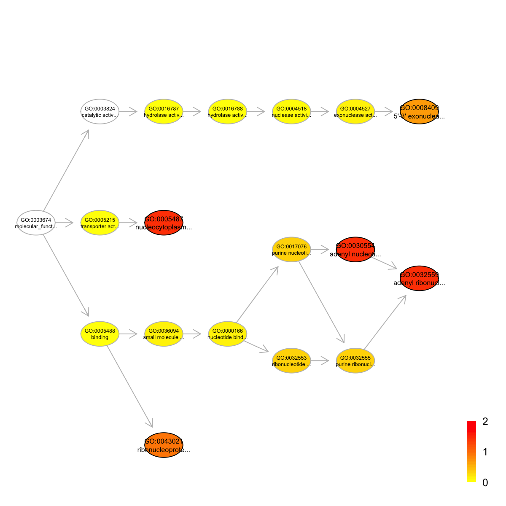
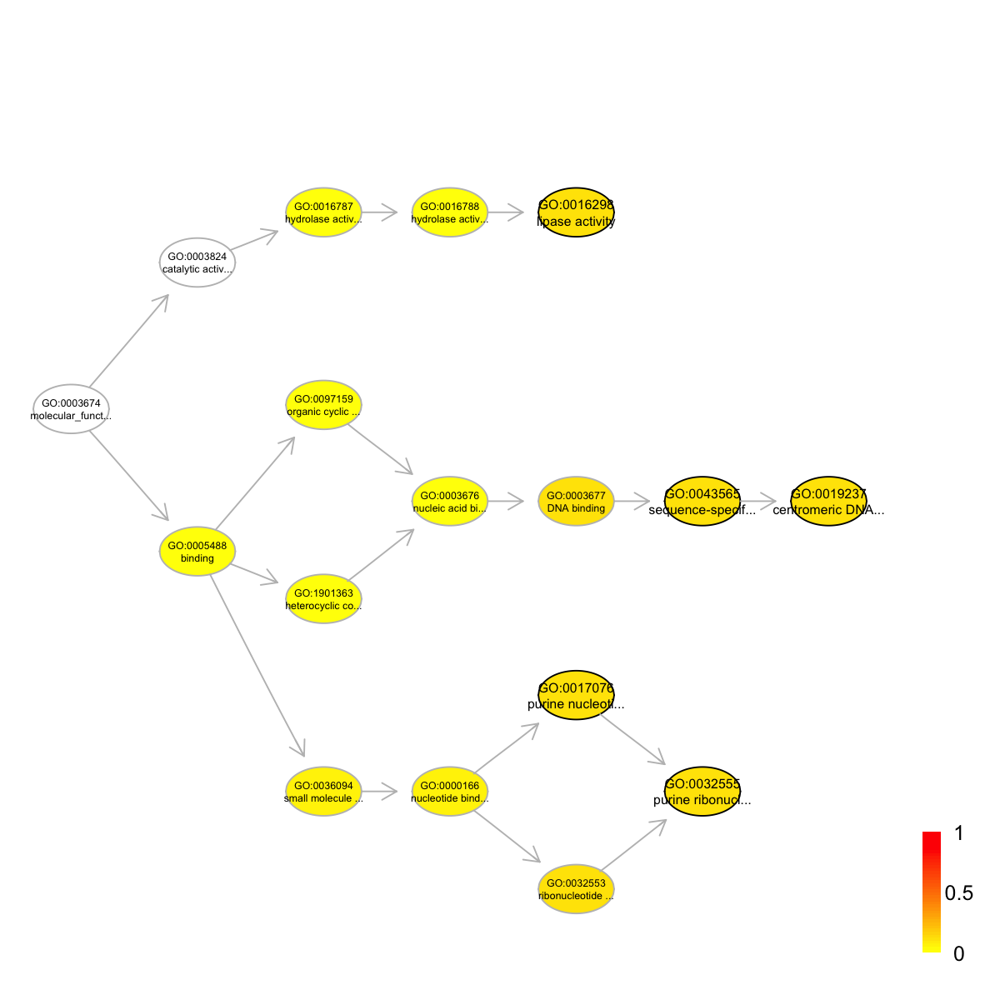
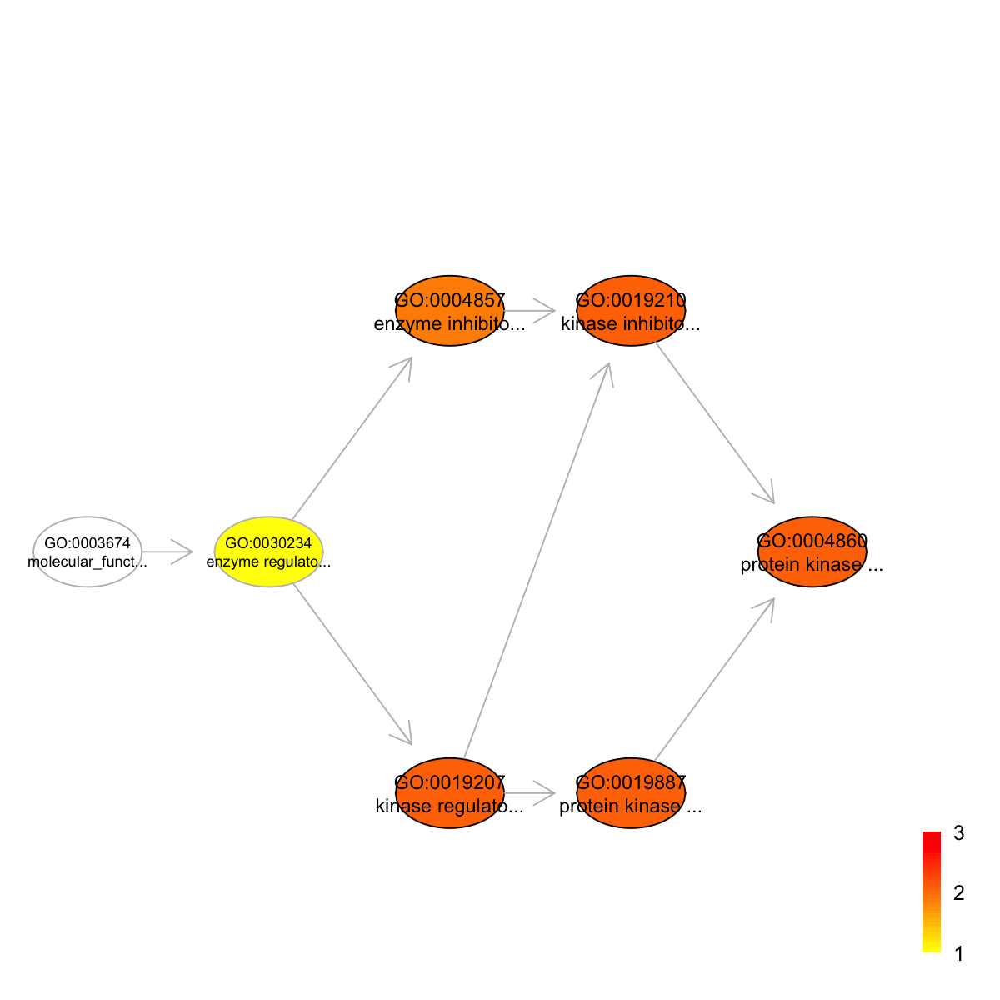
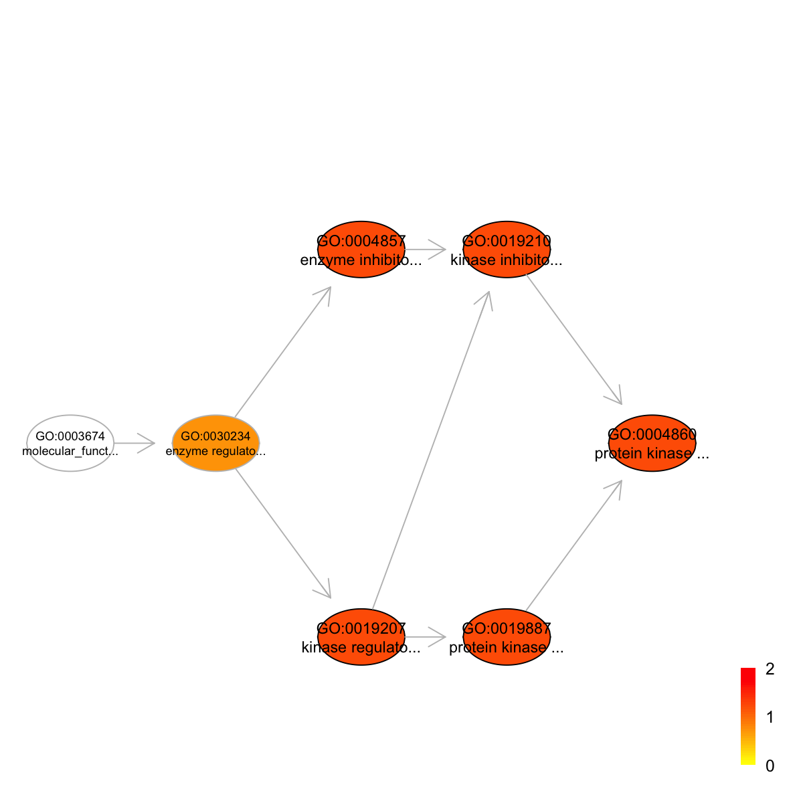
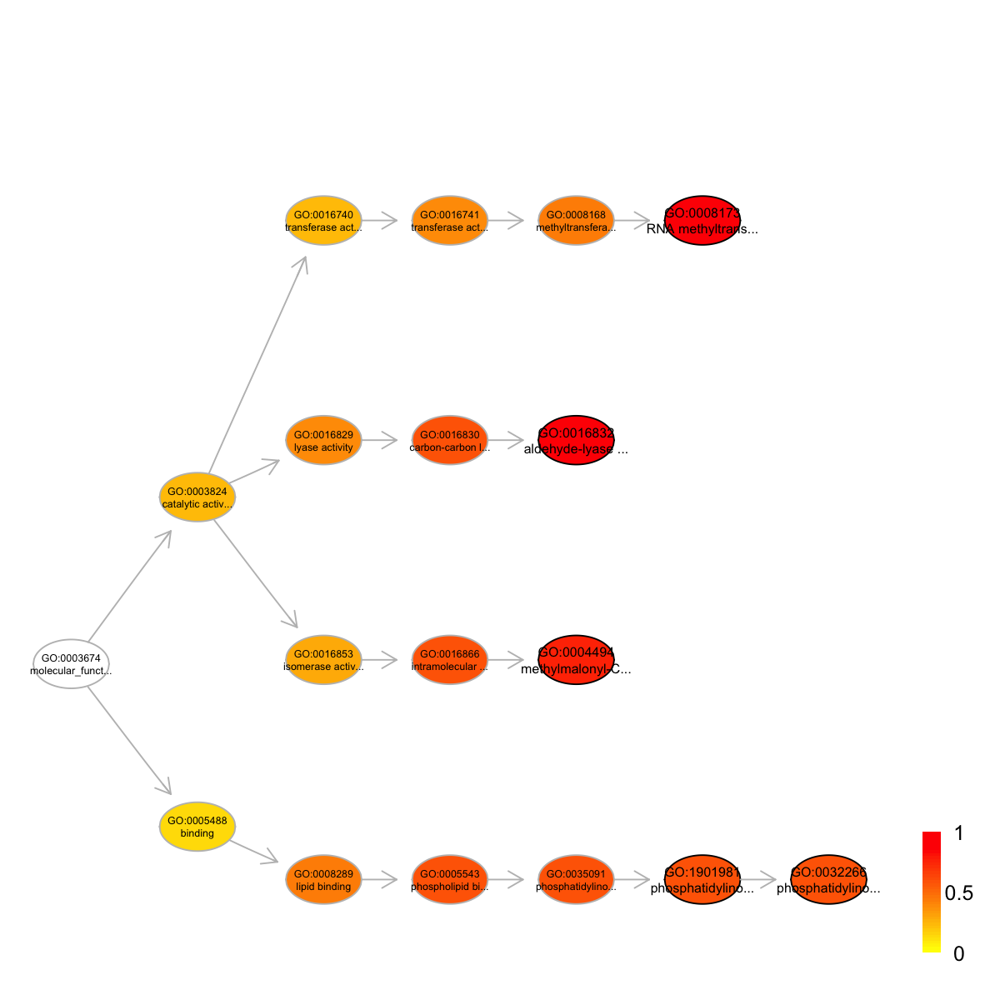
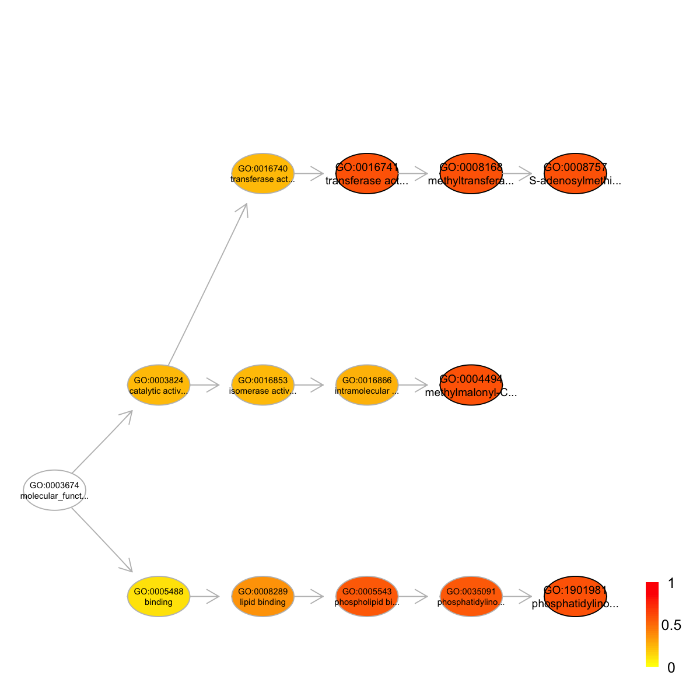
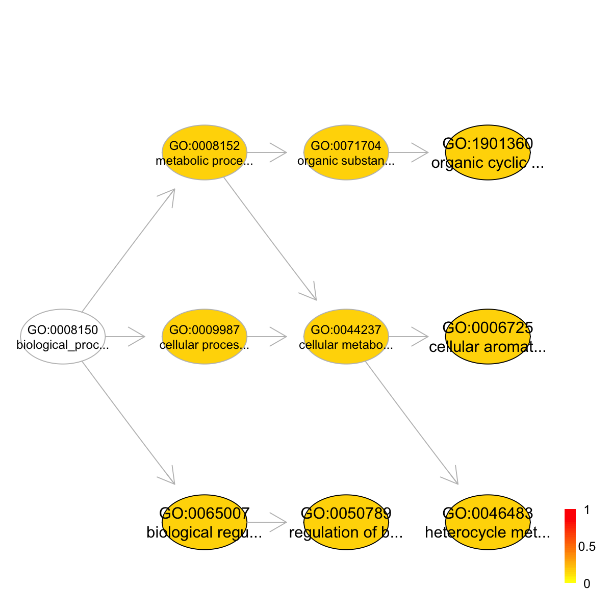

dcEnrichment is supposed to conduct enrichment analysis for an
input group of domains using a specified ontology. It returns an object
of S4 class "Eoutput". Enrichment analysis is based on either Fisher's
exact test or Hypergeometric test. The test can respect the hierarchy
of the ontology. The user can customise the background domains;
otherwise, the function will use all annotatable domains as the test
background
dcEnrichment(data, background = NULL, domain = c(NA, "SCOP.sf", "SCOP.fa", "Pfam",
"InterPro", "Rfam"), ontology = c(NA, "GOBP", "GOMF", "GOCC", "DO", "HPPA", "HPMI",
"HPON", "MP", "EC", "KW", "UP"), sizeRange = c(10, 1000), min.overlap = 3, which_distance = NULL,
test = c("HypergeoTest", "FisherTest", "BinomialTest"), p.adjust.method = c("BH",
"BY", "bonferroni", "holm", "hochberg", "hommel"), ontology.algorithm = c("none",
"pc", "elim", "lea"), elim.pvalue = 0.01, lea.depth = 2, verbose = T, domain.RData = NULL,
ontology.RData = NULL, annotations.RData = NULL, RData.location = "http://dcgor.r-forge.r-project.org/data")
dcBuildInfoDataFrame
for how to creat this objectdcBuildOnto for how to creat
this objectdcBuildAnno
for how to creat this objectRData.location=".". If RData to load is already part of package
itself, this parameter can be ignored (since this function will try to
load it via function data first)an object of S4 class Eoutput, with following slots:
domain: a character specifying the domain identity
ontology: a character specifying the ontology used
term_info: a matrix of nTerm X 5 containing term
information, where nTerm is the number of terms in consideration, and
the 5 columns are "term_id" (i.e. "Term ID"), "term_name" (i.e. "Term
Name"), "namespace" (i.e. "Term Namespace"), "distance" (i.e. "Term
Distance") and "IC" (i.e. "Information Content for the term based on
annotation frequency by it")
anno: a list of terms, each storing annotated domain
members (also within the background domains). Always, terms are
identified by "term_id" and domain members identified by their ids
(e.g. sunids for SCOP domains)
data: a vector containing input data in consideration. It
is not always the same as the input data as only those mappable and
annotatable are retained
background: a vector containing background in
consideration. It is not always the same as the input background as
only those mappable/annotatable are retained
overlap: a list of terms, each storing domains overlapped
between domains annotated by a term and domains in the input data (i.e.
the domains of interest). Always, terms are identified by "term_id" and
domain members identified by their IDs (e.g. sunids for SCOP domains)
zscore: a vector containing z-scores
pvalue: a vector containing p-values
adjp: a vector containing adjusted p-values. It is the p
value but after being adjusted for multiple comparisons
The interpretation of the algorithms used to account for the hierarchy of the ontology is:
# 1) Enrichment analysis for SCOP domain superfamilies (sf) ## 1a) load SCOP.sf (as 'InfoDataFrame' object) SCOP.sf <- dcRDataLoader('SCOP.sf')'SCOP.sf' (from package 'dcGOR' version 1.0.5) has been loaded into the working environment### randomly select 50 domains as a list of domains of interest data <- sample(rowNames(SCOP.sf), 50) ## 1b) perform enrichment analysis, producing an object of S4 class 'Eoutput' eoutput <- dcEnrichment(data, domain="SCOP.sf", ontology="GOMF")Start at 2015-06-04 16:17:23 First, load the ontology 'GOMF', the domain 'SCOP.sf', and their associations (2015-06-04 16:17:23) ... 'onto.GOMF' (from package 'dcGOR' version 1.0.5) has been loaded into the working environment 'SCOP.sf' (from package 'dcGOR' version 1.0.5) has been loaded into the working environment 'SCOP.sf2GOMF' (from package 'dcGOR' version 1.0.5) has been loaded into the working environment Second, perform enrichment analysis using HypergeoTest (2015-06-04 16:17:29) ... There are 811 terms being used, each restricted within [10,1000] annotations Last, adjust the p-values using the BH method (2015-06-04 16:17:30) ... End at 2015-06-04 16:17:30 Runtime in total is: 7 secseoutputAn object of S4 class 'Eoutput', containing following slots: @domain: 'SCOP.sf' @ontology: 'GOMF' @term_info: a data.frame of 152 terms X 5 information @anno: a list of 152 terms, each storing annotated domains @data: a vector containing a group of 25 input domains (annotatable) @background: a vector containing a group of 1083 background domains (annotatable) @overlap: a list of 152 terms, each containing domains overlapped with input domains @zscore: a vector of 152 terms, containing z-scores @pvalue: a vector of 152 terms, containing p-values @adjp: a vector of 152 terms, containing adjusted p-values In summary, a total of 152 terms ('GOMF') are analysed for a group of 25 input domains ('SCOP.sf')## 1c) view the top 10 significance terms view(eoutput, top_num=10, sortBy="pvalue", details=TRUE)term_id nAnno nGroup nOverlap zscore pvalue adjp GO:0032559 GO:0032559 18 25 3 4.09 0.00055 0.039 GO:0030554 GO:0030554 19 25 3 3.95 0.00068 0.039 GO:0005487 GO:0005487 34 25 4 3.73 0.00076 0.039 GO:0043021 GO:0043021 28 25 3 3.00 0.00310 0.120 GO:0008409 GO:0008409 34 25 3 2.57 0.00640 0.200 GO:0051540 GO:0051540 69 25 4 1.99 0.01800 0.450 GO:0016298 GO:0016298 101 25 5 1.86 0.02300 0.480 GO:0051538 GO:0051538 55 25 3 1.59 0.03400 0.480 GO:0043565 GO:0043565 111 25 5 1.63 0.03500 0.480 GO:0019237 GO:0019237 84 25 4 1.56 0.03800 0.480 term_name term_namespace GO:0032559 adenyl ribonucleotide binding molecular_function GO:0030554 adenyl nucleotide binding molecular_function GO:0005487 nucleocytoplasmic transporter activity molecular_function GO:0043021 ribonucleoprotein complex binding molecular_function GO:0008409 5'-3' exonuclease activity molecular_function GO:0051540 metal cluster binding molecular_function GO:0016298 lipase activity molecular_function GO:0051538 3 iron, 4 sulfur cluster binding molecular_function GO:0043565 sequence-specific DNA binding molecular_function GO:0019237 centromeric DNA binding molecular_function term_distance members GO:0032559 7 46955,53092,47719 GO:0030554 6 46955,53092,47719 GO:0005487 2 109885,161070,90096,143575 GO:0043021 2 46955,161070,50715 GO:0008409 6 161070,90096,56219 GO:0051540 2 158457,46955,47719,143575 GO:0016298 4 46955,161070,47719,56219,50715 GO:0051538 4 158457,46955,47719 GO:0043565 5 52029,109885,161070,90096,143575 GO:0019237 6 109885,161070,90096,143575## 1d) visualise the top 10 significant terms in the ontology hierarchy ### color-coded according to 10-based negative logarithm of adjusted p-values (adjp) visEnrichment(eoutput)Ontology 'GOMF' containing 18 nodes/terms (including 5 in query; also highlighted in frame) has been shown in your screen, with colorbar indicating -1*log10(adjusted p-values)## 1e) the same as above but using a customised background ### randomly select 500 domains as background background <- sample(rowNames(SCOP.sf), 500)### perform enrichment analysis, producing an object of S4 class 'Eoutput' eoutput <- dcEnrichment(data, background=background, domain="SCOP.sf", ontology="GOMF")Start at 2015-06-04 16:17:32 First, load the ontology 'GOMF', the domain 'SCOP.sf', and their associations (2015-06-04 16:17:32) ... 'onto.GOMF' (from package 'dcGOR' version 1.0.5) has been loaded into the working environment 'SCOP.sf' (from package 'dcGOR' version 1.0.5) has been loaded into the working environment 'SCOP.sf2GOMF' (from package 'dcGOR' version 1.0.5) has been loaded into the working environment Second, perform enrichment analysis using HypergeoTest (2015-06-04 16:17:37) ... There are 432 terms being used, each restricted within [10,1000] annotations Last, adjust the p-values using the BH method (2015-06-04 16:17:37) ... End at 2015-06-04 16:17:37 Runtime in total is: 5 secseoutputAn object of S4 class 'Eoutput', containing following slots: @domain: 'SCOP.sf' @ontology: 'GOMF' @term_info: a data.frame of 147 terms X 5 information @anno: a list of 147 terms, each storing annotated domains @data: a vector containing a group of 25 input domains (annotatable) @background: a vector containing a group of 268 background domains (annotatable) @overlap: a list of 147 terms, each containing domains overlapped with input domains @zscore: a vector of 147 terms, containing z-scores @pvalue: a vector of 147 terms, containing p-values @adjp: a vector of 147 terms, containing adjusted p-values In summary, a total of 147 terms ('GOMF') are analysed for a group of 25 input domains ('SCOP.sf')### view the top 10 significance terms view(eoutput, top_num=10, sortBy="pvalue", details=TRUE)term_id nAnno nGroup nOverlap zscore pvalue adjp GO:0019237 GO:0019237 19 25 4 1.82 0.022 0.79 GO:0032555 GO:0032555 13 25 3 1.74 0.024 0.79 GO:0016298 GO:0016298 27 25 5 1.73 0.027 0.79 GO:0017076 GO:0017076 14 25 3 1.60 0.031 0.79 GO:0043565 GO:0043565 29 25 5 1.55 0.038 0.79 GO:0032553 GO:0032553 15 25 3 1.46 0.040 0.79 GO:0004620 GO:0004620 22 25 4 1.49 0.041 0.79 GO:0051540 GO:0051540 23 25 4 1.39 0.049 0.79 GO:0003677 GO:0003677 59 25 8 1.26 0.069 0.79 GO:0051538 GO:0051538 18 25 3 1.11 0.073 0.79 term_name term_namespace term_distance GO:0019237 centromeric DNA binding molecular_function 6 GO:0032555 purine ribonucleotide binding molecular_function 6 GO:0016298 lipase activity molecular_function 4 GO:0017076 purine nucleotide binding molecular_function 5 GO:0043565 sequence-specific DNA binding molecular_function 5 GO:0032553 ribonucleotide binding molecular_function 5 GO:0004620 phospholipase activity molecular_function 5 GO:0051540 metal cluster binding molecular_function 2 GO:0003677 DNA binding molecular_function 4 GO:0051538 3 iron, 4 sulfur cluster binding molecular_function 4 members GO:0019237 90096,161070,143575,109885 GO:0032555 47719,46955,53092 GO:0016298 47719,46955,161070,56219,50715 GO:0017076 47719,46955,53092 GO:0043565 90096,161070,143575,109885,52029 GO:0032553 47719,46955,53092 GO:0004620 47719,46955,161070,50715 GO:0051540 47719,46955,143575,158457 GO:0003677 54782,90096,53092,47027,161070,143575,109885,52029 GO:0051538 47719,46955,158457### visualise the top 10 significant terms in the ontology hierarchy ### color-coded according to 10-based negative logarithm of adjusted p-values (adjp) visEnrichment(eoutput)Ontology 'GOMF' containing 17 nodes/terms (including 5 in query; also highlighted in frame) has been shown in your screen, with colorbar indicating -1*log10(adjusted p-values)########################################################### # 2) Enrichment analysis for Pfam domains (Pfam) ## 2a) load Pfam (as 'InfoDataFrame' object) Pfam <- dcRDataLoader('Pfam')'Pfam' (from package 'dcGOR' version 1.0.5) has been loaded into the working environment ### randomly select 100 domains as a list of domains of interest data <- sample(rowNames(Pfam), 100) ## 2b) perform enrichment analysis, producing an object of S4 class 'Eoutput' eoutput <- dcEnrichment(data, domain="Pfam", ontology="GOMF")Start at 2015-06-04 16:17:40 First, load the ontology 'GOMF', the domain 'Pfam', and their associations (2015-06-04 16:17:40) ... 'onto.GOMF' (from package 'dcGOR' version 1.0.5) has been loaded into the working environment 'Pfam' (from package 'dcGOR' version 1.0.5) has been loaded into the working environment 'Pfam2GOMF' (from package 'dcGOR' version 1.0.5) has been loaded into the working environment Second, perform enrichment analysis using HypergeoTest (2015-06-04 16:17:43) ... There are 334 terms being used, each restricted within [10,1000] annotations Last, adjust the p-values using the BH method (2015-06-04 16:17:43) ... End at 2015-06-04 16:17:43 Runtime in total is: 3 secseoutputAn object of S4 class 'Eoutput', containing following slots: @domain: 'Pfam' @ontology: 'GOMF' @term_info: a data.frame of 16 terms X 5 information @anno: a list of 16 terms, each storing annotated domains @data: a vector containing a group of 22 input domains (annotatable) @background: a vector containing a group of 3359 background domains (annotatable) @overlap: a list of 16 terms, each containing domains overlapped with input domains @zscore: a vector of 16 terms, containing z-scores @pvalue: a vector of 16 terms, containing p-values @adjp: a vector of 16 terms, containing adjusted p-values In summary, a total of 16 terms ('GOMF') are analysed for a group of 22 input domains ('Pfam')## 2c) view the top 10 significance terms view(eoutput, top_num=10, sortBy="pvalue", details=TRUE)term_id nAnno nGroup nOverlap zscore pvalue adjp GO:0019210 GO:0019210 82 22 3 3.410 0.0017 0.0082 GO:0004860 GO:0004860 82 22 3 3.410 0.0017 0.0082 GO:0019887 GO:0019887 85 22 3 3.330 0.0020 0.0082 GO:0019207 GO:0019207 86 22 3 3.300 0.0021 0.0082 GO:0004857 GO:0004857 106 22 3 2.820 0.0044 0.0140 GO:0030234 GO:0030234 198 22 3 1.550 0.0370 0.0990 GO:0022891 GO:0022891 273 22 3 0.949 0.0980 0.2000 GO:0016740 GO:0016740 767 22 7 1.010 0.1100 0.2000 GO:0022857 GO:0022857 290 22 3 0.838 0.1200 0.2000 GO:0022892 GO:0022892 296 22 3 0.801 0.1200 0.2000 term_name GO:0019210 kinase inhibitor activity GO:0004860 protein kinase inhibitor activity GO:0019887 protein kinase regulator activity GO:0019207 kinase regulator activity GO:0004857 enzyme inhibitor activity GO:0030234 enzyme regulator activity GO:0022891 substrate-specific transmembrane transporter activity GO:0016740 transferase activity GO:0022857 transmembrane transporter activity GO:0022892 substrate-specific transporter activity term_namespace term_distance GO:0019210 molecular_function 3 GO:0004860 molecular_function 4 GO:0019887 molecular_function 3 GO:0019207 molecular_function 2 GO:0004857 molecular_function 2 GO:0030234 molecular_function 1 GO:0022891 molecular_function 3 GO:0016740 molecular_function 2 GO:0022857 molecular_function 2 GO:0022892 molecular_function 2 members GO:0019210 PF06452,PF05148,PF04616 GO:0004860 PF06452,PF05148,PF04616 GO:0019887 PF06452,PF05148,PF04616 GO:0019207 PF06452,PF05148,PF04616 GO:0004857 PF06452,PF05148,PF04616 GO:0030234 PF06452,PF05148,PF04616 GO:0022891 PF03418,PF15291,PF05388 GO:0016740 PF00328,PF00444,PF03418,PF06452,PF15291,PF09478,PF02172 GO:0022857 PF03418,PF15291,PF05388 GO:0022892 PF03418,PF15291,PF05388## 2d) visualise the top 10 significant terms in the ontology hierarchy ### color-coded according to 10-based negative logarithm of adjusted p-values (adjp) visEnrichment(eoutput)Ontology 'GOMF' containing 7 nodes/terms (including 5 in query; also highlighted in frame) has been shown in your screen, with colorbar indicating -1*log10(adjusted p-values)## 2e) the same as above but using a customised background ### randomly select 1000 domains as background background <- sample(rowNames(Pfam), 1000)### perform enrichment analysis, producing an object of S4 class 'Eoutput' eoutput <- dcEnrichment(data, background=background, domain="Pfam", ontology="GOMF")Start at 2015-06-04 16:17:45 First, load the ontology 'GOMF', the domain 'Pfam', and their associations (2015-06-04 16:17:45) ... 'onto.GOMF' (from package 'dcGOR' version 1.0.5) has been loaded into the working environment 'Pfam' (from package 'dcGOR' version 1.0.5) has been loaded into the working environment 'Pfam2GOMF' (from package 'dcGOR' version 1.0.5) has been loaded into the working environment Second, perform enrichment analysis using HypergeoTest (2015-06-04 16:17:48) ... There are 44 terms being used, each restricted within [10,1000] annotations Last, adjust the p-values using the BH method (2015-06-04 16:17:48) ... End at 2015-06-04 16:17:48 Runtime in total is: 3 secseoutputAn object of S4 class 'Eoutput', containing following slots: @domain: 'Pfam' @ontology: 'GOMF' @term_info: a data.frame of 16 terms X 5 information @anno: a list of 16 terms, each storing annotated domains @data: a vector containing a group of 22 input domains (annotatable) @background: a vector containing a group of 252 background domains (annotatable) @overlap: a list of 16 terms, each containing domains overlapped with input domains @zscore: a vector of 16 terms, containing z-scores @pvalue: a vector of 16 terms, containing p-values @adjp: a vector of 16 terms, containing adjusted p-values In summary, a total of 16 terms ('GOMF') are analysed for a group of 22 input domains ('Pfam')### view the top 10 significance terms view(eoutput, top_num=10, sortBy="pvalue", details=TRUE)term_id nAnno nGroup nOverlap zscore pvalue adjp GO:0019210 GO:0019210 12 22 3 2.040 0.014 0.059 GO:0004860 GO:0004860 12 22 3 2.040 0.014 0.059 GO:0004857 GO:0004857 13 22 3 1.880 0.019 0.059 GO:0019207 GO:0019207 13 22 3 1.880 0.019 0.059 GO:0019887 GO:0019887 13 22 3 1.880 0.019 0.059 GO:0030234 GO:0030234 19 22 3 1.130 0.070 0.180 GO:0005215 GO:0005215 22 22 3 0.852 0.110 0.180 GO:0022857 GO:0022857 22 22 3 0.852 0.110 0.180 GO:0022892 GO:0022892 22 22 3 0.852 0.110 0.180 GO:0022891 GO:0022891 22 22 3 0.852 0.110 0.180 term_name GO:0019210 kinase inhibitor activity GO:0004860 protein kinase inhibitor activity GO:0004857 enzyme inhibitor activity GO:0019207 kinase regulator activity GO:0019887 protein kinase regulator activity GO:0030234 enzyme regulator activity GO:0005215 transporter activity GO:0022857 transmembrane transporter activity GO:0022892 substrate-specific transporter activity GO:0022891 substrate-specific transmembrane transporter activity term_namespace term_distance members GO:0019210 molecular_function 3 PF05148,PF04616,PF06452 GO:0004860 molecular_function 4 PF05148,PF04616,PF06452 GO:0004857 molecular_function 2 PF05148,PF04616,PF06452 GO:0019207 molecular_function 2 PF05148,PF04616,PF06452 GO:0019887 molecular_function 3 PF05148,PF04616,PF06452 GO:0030234 molecular_function 1 PF05148,PF04616,PF06452 GO:0005215 molecular_function 1 PF03418,PF15291,PF05388 GO:0022857 molecular_function 2 PF03418,PF15291,PF05388 GO:0022892 molecular_function 2 PF03418,PF15291,PF05388 GO:0022891 molecular_function 3 PF03418,PF15291,PF05388### visualise the top 10 significant terms in the ontology hierarchy ### color-coded according to 10-based negative logarithm of adjusted p-values (adjp) visEnrichment(eoutput)Ontology 'GOMF' containing 7 nodes/terms (including 5 in query; also highlighted in frame) has been shown in your screen, with colorbar indicating -1*log10(adjusted p-values)########################################################### # 3) Enrichment analysis for InterPro domains (InterPro) ## 3a) load InterPro (as 'InfoDataFrame' object) InterPro <- dcRDataLoader('InterPro')'InterPro' (from package 'dcGOR' version 1.0.5) has been loaded into the working environment ### randomly select 100 domains as a list of domains of interest data <- sample(rowNames(InterPro), 100) ## 3b) perform enrichment analysis, producing an object of S4 class 'Eoutput' eoutput <- dcEnrichment(data, domain="InterPro", ontology="GOMF")Start at 2015-06-04 16:17:49 First, load the ontology 'GOMF', the domain 'InterPro', and their associations (2015-06-04 16:17:49) ... 'onto.GOMF' (from package 'dcGOR' version 1.0.5) has been loaded into the working environment 'InterPro' (from package 'dcGOR' version 1.0.5) has been loaded into the working environment 'InterPro2GOMF' (from package 'dcGOR' version 1.0.5) has been loaded into the working environment Second, perform enrichment analysis using HypergeoTest (2015-06-04 16:17:56) ... There are 630 terms being used, each restricted within [10,1000] annotations Last, adjust the p-values using the BH method (2015-06-04 16:17:57) ... End at 2015-06-04 16:17:57 Runtime in total is: 8 secseoutputAn object of S4 class 'Eoutput', containing following slots: @domain: 'InterPro' @ontology: 'GOMF' @term_info: a data.frame of 60 terms X 5 information @anno: a list of 60 terms, each storing annotated domains @data: a vector containing a group of 71 input domains (annotatable) @background: a vector containing a group of 8899 background domains (annotatable) @overlap: a list of 60 terms, each containing domains overlapped with input domains @zscore: a vector of 60 terms, containing z-scores @pvalue: a vector of 60 terms, containing p-values @adjp: a vector of 60 terms, containing adjusted p-values In summary, a total of 60 terms ('GOMF') are analysed for a group of 71 input domains ('InterPro')## 3c) view the top 10 significance terms view(eoutput, top_num=10, sortBy="pvalue", details=TRUE)term_id nAnno nGroup nOverlap zscore pvalue adjp GO:0016832 GO:0016832 47 71 3 4.32 0.00051 0.031 GO:0008173 GO:0008173 86 71 3 2.82 0.00480 0.140 GO:0004494 GO:0004494 101 71 3 2.47 0.00850 0.170 GO:0032266 GO:0032266 208 71 4 1.85 0.02500 0.260 GO:1901981 GO:1901981 210 71 4 1.82 0.02600 0.260 GO:0016866 GO:0016866 154 71 3 1.62 0.03400 0.260 GO:0035091 GO:0035091 236 71 4 1.57 0.04000 0.260 GO:0016830 GO:0016830 404 71 6 1.59 0.04100 0.260 GO:0005543 GO:0005543 239 71 4 1.54 0.04200 0.260 GO:0008757 GO:0008757 166 71 3 1.48 0.04300 0.260 term_name GO:0016832 aldehyde-lyase activity GO:0008173 RNA methyltransferase activity GO:0004494 methylmalonyl-CoA mutase activity GO:0032266 phosphatidylinositol-3-phosphate binding GO:1901981 phosphatidylinositol phosphate binding GO:0016866 intramolecular transferase activity GO:0035091 phosphatidylinositol binding GO:0016830 carbon-carbon lyase activity GO:0005543 phospholipid binding GO:0008757 S-adenosylmethionine-dependent methyltransferase activity term_namespace term_distance GO:0016832 molecular_function 4 GO:0008173 molecular_function 5 GO:0004494 molecular_function 4 GO:0032266 molecular_function 7 GO:1901981 molecular_function 6 GO:0016866 molecular_function 3 GO:0035091 molecular_function 5 GO:0016830 molecular_function 3 GO:0005543 molecular_function 3 GO:0008757 molecular_function 5 members GO:0016832 IPR028380,IPR001711,IPR020469 GO:0008173 IPR005869,IPR012805,IPR020097 GO:0004494 IPR004764,IPR005292,IPR000463 GO:0032266 IPR004930,IPR027516,IPR017705,IPR020097 GO:1901981 IPR004930,IPR027516,IPR017705,IPR020097 GO:0016866 IPR004764,IPR005292,IPR000463 GO:0035091 IPR004930,IPR027516,IPR017705,IPR020097 GO:0016830 IPR004708,IPR028380,IPR007871,IPR013705,IPR001711,IPR020469 GO:0005543 IPR004930,IPR027516,IPR017705,IPR020097 GO:0008757 IPR005869,IPR012805,IPR020097## 3d) visualise the top 10 significant terms in the ontology hierarchy ### color-coded according to 10-based negative logarithm of adjusted p-values (adjp) visEnrichment(eoutput)Ontology 'GOMF' containing 18 nodes/terms (including 5 in query; also highlighted in frame) has been shown in your screen, with colorbar indicating -1*log10(adjusted p-values)## 3e) the same as above but using a customised background ### randomly select 1000 domains as background background <- sample(rowNames(InterPro), 1000)### perform enrichment analysis, producing an object of S4 class 'Eoutput' eoutput <- dcEnrichment(data, background=background, domain="InterPro", ontology="GOMF")Start at 2015-06-04 16:17:59 First, load the ontology 'GOMF', the domain 'InterPro', and their associations (2015-06-04 16:17:59) ... 'onto.GOMF' (from package 'dcGOR' version 1.0.5) has been loaded into the working environment 'InterPro' (from package 'dcGOR' version 1.0.5) has been loaded into the working environment 'InterPro2GOMF' (from package 'dcGOR' version 1.0.5) has been loaded into the working environment Second, perform enrichment analysis using HypergeoTest (2015-06-04 16:18:05) ... There are 149 terms being used, each restricted within [10,1000] annotations Last, adjust the p-values using the BH method (2015-06-04 16:18:05) ... End at 2015-06-04 16:18:05 Runtime in total is: 6 secseoutputAn object of S4 class 'Eoutput', containing following slots: @domain: 'InterPro' @ontology: 'GOMF' @term_info: a data.frame of 58 terms X 5 information @anno: a list of 58 terms, each storing annotated domains @data: a vector containing a group of 71 input domains (annotatable) @background: a vector containing a group of 834 background domains (annotatable) @overlap: a list of 58 terms, each containing domains overlapped with input domains @zscore: a vector of 58 terms, containing z-scores @pvalue: a vector of 58 terms, containing p-values @adjp: a vector of 58 terms, containing adjusted p-values In summary, a total of 58 terms ('GOMF') are analysed for a group of 71 input domains ('InterPro')### view the top 10 significance terms view(eoutput, top_num=10, sortBy="pvalue", details=TRUE)term_id nAnno nGroup nOverlap zscore pvalue adjp GO:0008757 GO:0008757 11 71 3 2.24 0.010 0.26 GO:0008168 GO:0008168 13 71 3 1.90 0.019 0.26 GO:0016741 GO:0016741 14 71 3 1.75 0.025 0.26 GO:0004494 GO:0004494 14 71 3 1.75 0.025 0.26 GO:1901981 GO:1901981 21 71 4 1.75 0.027 0.26 GO:0032266 GO:0032266 21 71 4 1.75 0.027 0.26 GO:0005543 GO:0005543 23 71 4 1.55 0.039 0.28 GO:0035091 GO:0035091 23 71 4 1.55 0.039 0.28 GO:0016830 GO:0016830 40 71 6 1.51 0.046 0.29 GO:0004672 GO:0004672 18 71 3 1.25 0.059 0.34 term_name GO:0008757 S-adenosylmethionine-dependent methyltransferase activity GO:0008168 methyltransferase activity GO:0016741 transferase activity, transferring one-carbon groups GO:0004494 methylmalonyl-CoA mutase activity GO:1901981 phosphatidylinositol phosphate binding GO:0032266 phosphatidylinositol-3-phosphate binding GO:0005543 phospholipid binding GO:0035091 phosphatidylinositol binding GO:0016830 carbon-carbon lyase activity GO:0004672 protein kinase activity term_namespace term_distance GO:0008757 molecular_function 5 GO:0008168 molecular_function 4 GO:0016741 molecular_function 3 GO:0004494 molecular_function 4 GO:1901981 molecular_function 6 GO:0032266 molecular_function 7 GO:0005543 molecular_function 3 GO:0035091 molecular_function 5 GO:0016830 molecular_function 3 GO:0004672 molecular_function 5 members GO:0008757 IPR012805,IPR005869,IPR020097 GO:0008168 IPR012805,IPR005869,IPR020097 GO:0016741 IPR012805,IPR005869,IPR020097 GO:0004494 IPR000463,IPR004764,IPR005292 GO:1901981 IPR004930,IPR017705,IPR027516,IPR020097 GO:0032266 IPR004930,IPR017705,IPR027516,IPR020097 GO:0005543 IPR004930,IPR017705,IPR027516,IPR020097 GO:0035091 IPR004930,IPR017705,IPR027516,IPR020097 GO:0016830 IPR028380,IPR007871,IPR020469,IPR001711,IPR013705,IPR004708 GO:0004672 IPR004768,IPR017128,IPR018150### visualise the top 10 significant terms in the ontology hierarchy ### color-coded according to 10-based negative logarithm of adjusted p-values (adjp) visEnrichment(eoutput)Ontology 'GOMF' containing 14 nodes/terms (including 5 in query; also highlighted in frame) has been shown in your screen, with colorbar indicating -1*log10(adjusted p-values)########################################################### # 4) Enrichment analysis for Rfam RNA families (Rfam) ## 4a) load Rfam (as 'InfoDataFrame' object) Rfam <- dcRDataLoader('Rfam')'Rfam' (from package 'dcGOR' version 1.0.5) has been loaded into the working environment ### randomly select 100 RNAs as a list of RNAs of interest data <- sample(rowNames(Rfam), 100) ## 4b) perform enrichment analysis, producing an object of S4 class 'Eoutput' eoutput <- dcEnrichment(data, domain="Rfam", ontology="GOBP")Start at 2015-06-04 16:18:07 First, load the ontology 'GOBP', the domain 'Rfam', and their associations (2015-06-04 16:18:07) ... 'onto.GOBP' (from package 'dcGOR' version 1.0.5) has been loaded into the working environment 'Rfam' (from package 'dcGOR' version 1.0.5) has been loaded into the working environment 'Rfam2GOBP' (from package 'dcGOR' version 1.0.5) has been loaded into the working environment Second, perform enrichment analysis using HypergeoTest (2015-06-04 16:18:09) ... There are 114 terms being used, each restricted within [10,1000] annotations Last, adjust the p-values using the BH method (2015-06-04 16:18:09) ... End at 2015-06-04 16:18:09 Runtime in total is: 2 secseoutputAn object of S4 class 'Eoutput', containing following slots: @domain: 'Rfam' @ontology: 'GOBP' @term_info: a data.frame of 23 terms X 5 information @anno: a list of 23 terms, each storing annotated domains @data: a vector containing a group of 51 input domains (annotatable) @background: a vector containing a group of 1377 background domains (annotatable) @overlap: a list of 23 terms, each containing domains overlapped with input domains @zscore: a vector of 23 terms, containing z-scores @pvalue: a vector of 23 terms, containing p-values @adjp: a vector of 23 terms, containing adjusted p-values In summary, a total of 23 terms ('GOBP') are analysed for a group of 51 input domains ('Rfam')## 4c) view the top 10 significance terms view(eoutput, top_num=10, sortBy="pvalue", details=FALSE)term_id nAnno nGroup nOverlap zscore pvalue adjp GO:0050789 GO:0050789 81 51 3 0.0000 0.35 0.7 GO:0065007 GO:0065007 85 51 3 -0.0878 0.39 0.7 GO:1901360 GO:1901360 1246 51 46 -0.0720 0.46 0.7 GO:0006725 GO:0006725 1246 51 46 -0.0720 0.46 0.7 GO:0046483 GO:0046483 1246 51 46 -0.0720 0.46 0.7 GO:0034641 GO:0034641 1247 51 46 -0.0903 0.46 0.7 GO:0006807 GO:0006807 1251 51 46 -0.1650 0.49 0.7 GO:0006396 GO:0006396 1225 51 45 -0.1690 0.50 0.7 GO:0008380 GO:0008380 542 51 19 -0.3140 0.56 0.7 GO:0000375 GO:0000375 541 51 19 -0.3030 0.56 0.7 term_name GO:0050789 regulation of biological process GO:0065007 biological regulation GO:1901360 organic cyclic compound metabolic process GO:0006725 cellular aromatic compound metabolic process GO:0046483 heterocycle metabolic process GO:0034641 cellular nitrogen compound metabolic process GO:0006807 nitrogen compound metabolic process GO:0006396 RNA processing GO:0008380 RNA splicing GO:0000375 RNA splicing, via transesterification reactions## 4d) visualise the top 10 significant terms in the ontology hierarchy ### color-coded according to 10-based negative logarithm of adjusted p-values (adjp) visEnrichment(eoutput)Ontology 'GOBP' containing 10 nodes/terms (including 5 in query; also highlighted in frame) has been shown in your screen, with colorbar indicating -1*log10(adjusted p-values)## 4e) the same as above but using a customised background ### randomly select 1000 RNAs as background background <- sample(rowNames(Rfam), 1000)### perform enrichment analysis, producing an object of S4 class 'Eoutput' eoutput <- dcEnrichment(data, background=background, domain="Rfam", ontology="GOBP")Start at 2015-06-04 16:18:12 First, load the ontology 'GOBP', the domain 'Rfam', and their associations (2015-06-04 16:18:12) ... 'onto.GOBP' (from package 'dcGOR' version 1.0.5) has been loaded into the working environment 'Rfam' (from package 'dcGOR' version 1.0.5) has been loaded into the working environment 'Rfam2GOBP' (from package 'dcGOR' version 1.0.5) has been loaded into the working environment Second, perform enrichment analysis using HypergeoTest (2015-06-04 16:18:13) ... There are 70 terms being used, each restricted within [10,1000] annotations Last, adjust the p-values using the BH method (2015-06-04 16:18:13) ... End at 2015-06-04 16:18:13 Runtime in total is: 1 secseoutputAn object of S4 class 'Eoutput', containing following slots: @domain: 'Rfam' @ontology: 'GOBP' @term_info: a data.frame of 23 terms X 5 information @anno: a list of 23 terms, each storing annotated domains @data: a vector containing a group of 51 input domains (annotatable) @background: a vector containing a group of 644 background domains (annotatable) @overlap: a list of 23 terms, each containing domains overlapped with input domains @zscore: a vector of 23 terms, containing z-scores @pvalue: a vector of 23 terms, containing p-values @adjp: a vector of 23 terms, containing adjusted p-values In summary, a total of 23 terms ('GOBP') are analysed for a group of 51 input domains ('Rfam')### view the top 10 significance terms view(eoutput, top_num=10, sortBy="pvalue", details=FALSE)term_id nAnno nGroup nOverlap zscore pvalue adjp GO:0050789 GO:0050789 37 51 3 0.0438 0.34 0.74 GO:0065007 GO:0065007 40 51 3 -0.1010 0.39 0.74 GO:1901360 GO:1901360 580 51 46 0.0333 0.41 0.74 GO:0006725 GO:0006725 580 51 46 0.0333 0.41 0.74 GO:0046483 GO:0046483 580 51 46 0.0333 0.41 0.74 GO:0034641 GO:0034641 582 51 46 -0.0445 0.44 0.74 GO:0006807 GO:0006807 583 51 46 -0.0843 0.46 0.74 GO:0006396 GO:0006396 574 51 45 -0.2140 0.51 0.74 GO:0016070 GO:0016070 576 51 45 -0.2920 0.54 0.74 GO:0044238 GO:0044238 589 51 46 -0.3360 0.55 0.74 term_name GO:0050789 regulation of biological process GO:0065007 biological regulation GO:1901360 organic cyclic compound metabolic process GO:0006725 cellular aromatic compound metabolic process GO:0046483 heterocycle metabolic process GO:0034641 cellular nitrogen compound metabolic process GO:0006807 nitrogen compound metabolic process GO:0006396 RNA processing GO:0016070 RNA metabolic process GO:0044238 primary metabolic process### visualise the top 10 significant terms in the ontology hierarchy ### color-coded according to 10-based negative logarithm of adjusted p-values (adjp) visEnrichment(eoutput)Ontology 'GOBP' containing 10 nodes/terms (including 5 in query; also highlighted in frame) has been shown in your screen, with colorbar indicating -1*log10(adjusted p-values)########################################################### # 5) Advanced usage: customised data for domain, ontology and annotations # 5a) create domain, ontology and annotations ## for domain domain <- dcBuildInfoDataFrame(input.file="http://dcgor.r-forge.r-project.org/data/InterPro/InterPro.txt", output.file="domain.RData")An object of S4 class 'InfoDataFrame' has been built and saved into '/Users/hfang/Sites/SUPERFAMILY/dcGOR/domain.RData'.## for ontology dcBuildOnto(relations.file="http://dcgor.r-forge.r-project.org/data/onto/igraph_GOMF_edges.txt", nodes.file="http://dcgor.r-forge.r-project.org/data/onto/igraph_GOMF_nodes.txt", output.file="ontology.RData")An object of S4 class 'Onto' has been built and saved into '/Users/hfang/Sites/SUPERFAMILY/dcGOR/ontology.RData'.## for annotations dcBuildAnno(domain_info.file="http://dcgor.r-forge.r-project.org/data/InterPro/InterPro.txt", term_info.file="http://dcgor.r-forge.r-project.org/data/InterPro/GO.txt", association.file="http://dcgor.r-forge.r-project.org/data/InterPro/Domain2GOMF.txt", output.file="annotations.RData")An object of S4 class 'Anno' has been built and saved into '/Users/hfang/Sites/SUPERFAMILY/dcGOR/annotations.RData'.## 5b) prepare data and background ### randomly select 100 domains as a list of domains of interest data <- sample(rowNames(domain), 100) ### randomly select 1000 domains as background background <- sample(rowNames(domain), 1000) ## 5c) perform enrichment analysis, producing an object of S4 class 'Eoutput' eoutput <- dcEnrichment(data, background=background, domain.RData='domain.RData', ontology.RData='ontology.RData', annotations.RData='annotations.RData')Start at 2015-06-04 16:18:20 First, load customised ontology 'ontology.RData', the domain 'domain.RData', and their associations 'annotations.RData' (2015-06-04 16:18:20)... Second, perform enrichment analysis using HypergeoTest (2015-06-04 16:18:25) ... There are 130 terms being used, each restricted within [10,1000] annotations Last, adjust the p-values using the BH method (2015-06-04 16:18:25) ... End at 2015-06-04 16:18:25 Runtime in total is: 5 secseoutputAn object of S4 class 'Eoutput', containing following slots: @domain: 'domain.RData' @ontology: 'ontology.RData' @term_info: a data.frame of 72 terms X 5 information @anno: a list of 72 terms, each storing annotated domains @data: a vector containing a group of 81 input domains (annotatable) @background: a vector containing a group of 818 background domains (annotatable) @overlap: a list of 72 terms, each containing domains overlapped with input domains @zscore: a vector of 72 terms, containing z-scores @pvalue: a vector of 72 terms, containing p-values @adjp: a vector of 72 terms, containing adjusted p-values In summary, a total of 72 terms ('ontology.RData') are analysed for a group of 81 input domains ('domain.RData')## 5d) view the top 10 significance terms view(eoutput, top_num=10, sortBy="pvalue", details=TRUE)term_id nAnno nGroup nOverlap zscore pvalue adjp GO:0016829 GO:0016829 66 81 12 2.35 0.0088 0.21 GO:0030515 GO:0030515 10 81 3 2.14 0.0120 0.21 GO:1901363 GO:1901363 28 81 6 2.08 0.0150 0.21 GO:0016835 GO:0016835 16 81 4 2.04 0.0150 0.21 GO:0003723 GO:0003723 16 81 4 2.04 0.0150 0.21 GO:0008092 GO:0008092 11 81 3 1.94 0.0170 0.21 GO:0097159 GO:0097159 30 81 6 1.89 0.0220 0.21 GO:0016651 GO:0016651 12 81 3 1.76 0.0240 0.21 GO:0016830 GO:0016830 45 81 8 1.82 0.0260 0.21 GO:0003676 GO:0003676 19 81 4 1.65 0.0320 0.21 term_name term_namespace GO:0016829 lyase activity molecular_function GO:0030515 snoRNA binding molecular_function GO:1901363 heterocyclic compound binding molecular_function GO:0016835 carbon-oxygen lyase activity molecular_function GO:0003723 RNA binding molecular_function GO:0008092 cytoskeletal protein binding molecular_function GO:0097159 organic cyclic compound binding molecular_function GO:0016651 oxidoreductase activity, acting on NAD(P)H molecular_function GO:0016830 carbon-carbon lyase activity molecular_function GO:0003676 nucleic acid binding molecular_function term_distance GO:0016829 2 GO:0030515 5 GO:1901363 2 GO:0016835 3 GO:0003723 4 GO:0008092 3 GO:0097159 2 GO:0016651 3 GO:0016830 3 GO:0003676 3 members GO:0016829 IPR007072,IPR006324,IPR002401,IPR019614,IPR000807,IPR015555,IPR011808,IPR002002,IPR000878,IPR011888,IPR023530,IPR017726 GO:0030515 IPR018028,IPR002401,IPR023530 GO:1901363 IPR018028,IPR002401,IPR008128,IPR008698,IPR019015,IPR023530 GO:0016835 IPR006324,IPR000807,IPR002002,IPR011888 GO:0003723 IPR018028,IPR002401,IPR008698,IPR023530 GO:0008092 IPR006324,IPR000321,IPR014307 GO:0097159 IPR018028,IPR002401,IPR008128,IPR008698,IPR019015,IPR023530 GO:0016651 IPR006886,IPR006443,IPR007083 GO:0016830 IPR007072,IPR002401,IPR019614,IPR011808,IPR000878,IPR011888,IPR023530,IPR017726 GO:0003676 IPR018028,IPR002401,IPR008698,IPR023530### visualise the top 10 significant terms in the ontology hierarchy ### color-coded according to 10-based negative logarithm of adjusted p-values (adjp) visEnrichment(eoutput)Ontology 'ontology.RData' containing 10 nodes/terms (including 5 in query; also highlighted in frame) has been shown in your screen, with colorbar indicating -1*log10(adjusted p-values)
dcEnrichment.r
dcEnrichment.Rd
dcEnrichment.pdf
dcRDataLoader, dcDAGannotate,
Eoutput-class, visEnrichment,
dcConverter
){kind=link}
){kind=link}
){kind=link}
){kind=link}
){kind=link}
){kind=link}
){kind=link}
){kind=link}